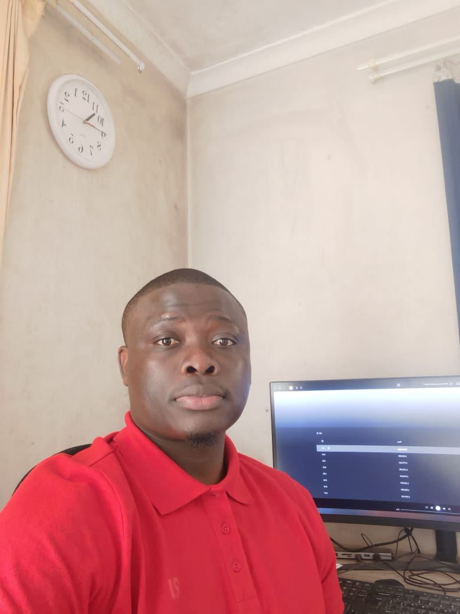

Evard D. Mabounda
About me
My name is Evard. I was born in Republic of Congo and currently live in South Africa. I am currently working as Customer Service Agent legal for a Canadian Company. My Faith is everything to me as I know there is nothing that I cannot do without God. I'd love to discover the world a bit more.

 Official Flag of Republic of Congo
Official Flag of Republic of Congo
Republic of the Congo, also known as Congo-Brazzaville, is a country in Central Africa with its capital in Brazzaville, located along the Congo River across from Kinshasa in the neighboring Democratic Republic of the Congo. The country is rich in natural resources and is known for its vast rainforests, rivers, and wildlife. Its economy largely depends on oil production, while the coastal city of Pointe-Noire serves as the main port and economic hub.